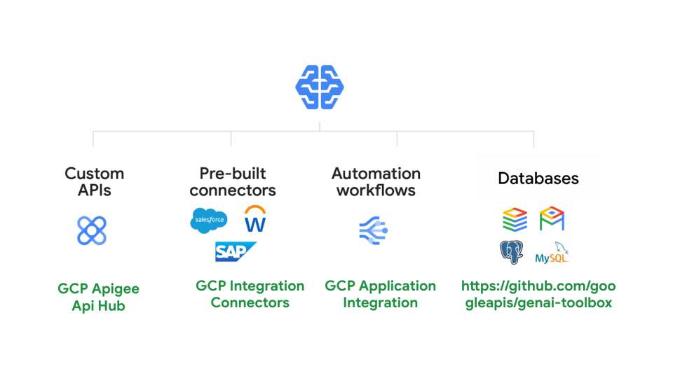
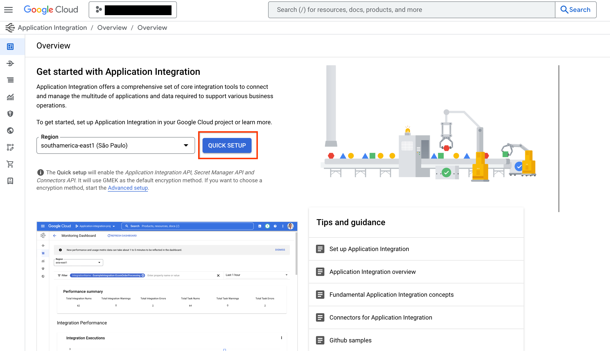
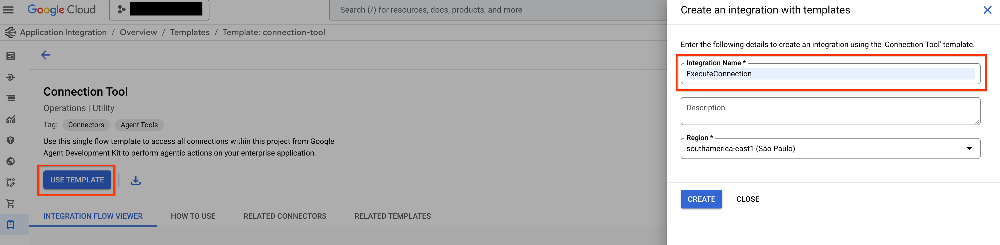
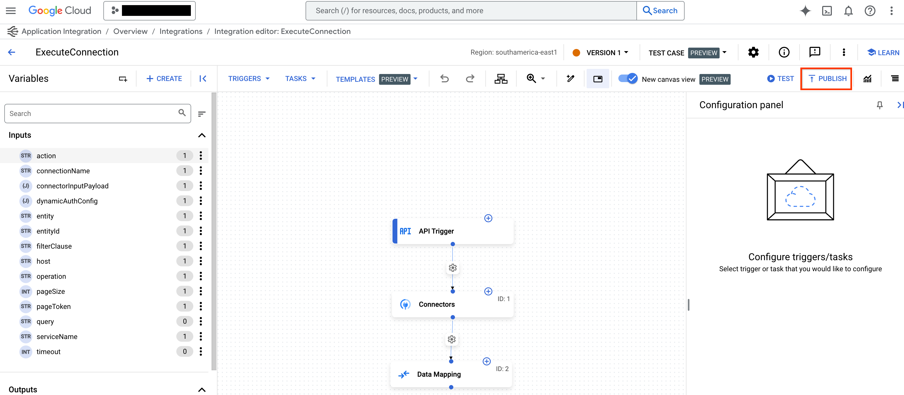
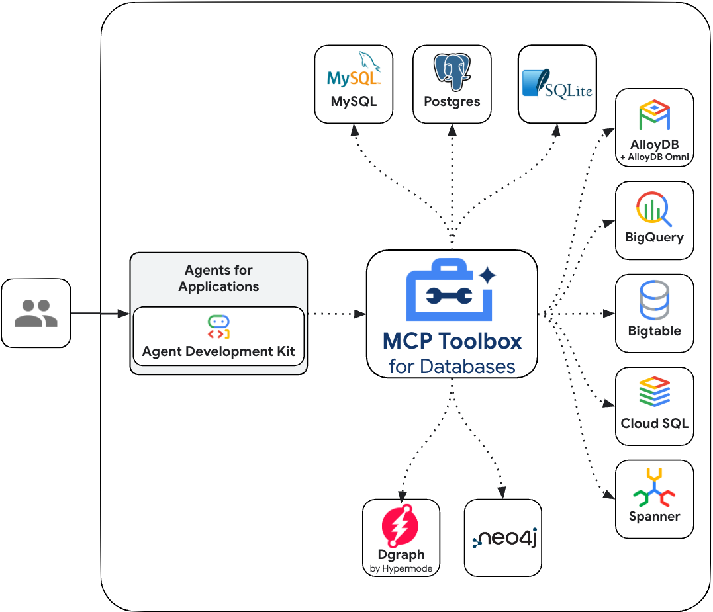

Google Cloud 도구¶
Google Cloud 도구를 사용하면 에이전트를 Google Cloud의 제품 및 서비스에 더 쉽게 연결할 수 있습니다. 단 몇 줄의 코드로 이러한 도구를 사용하여 에이전트를 다음과 연결할 수 있습니다:
- 개발자가 Apigee에서 호스팅하는 모든 사용자 정의 API.
- Salesforce, Workday, SAP와 같은 엔터프라이즈 시스템에 대한 100개 이상의 사전 빌드된 커넥터.
- 애플리케이션 통합을 사용하여 구축된 자동화 워크플로.
- 데이터베이스용 MCP 도구 상자를 사용하여 Spanner, AlloyDB, Postgres 등과 같은 데이터베이스.

Apigee API Hub 도구¶
ApiHubToolset을 사용하면 Apigee API 허브의 모든 문서화된 API를 몇 줄의 코드로 도구로 전환할 수 있습니다. 이 섹션에서는 API에 대한 보안 연결을 위한 인증 설정을 포함하여 단계별 지침을 보여줍니다.
전제 조건
- ADK 설치
- Google Cloud CLI 설치.
- 문서화된(즉, OpenAPI 사양) API가 있는 Apigee API 허브 인스턴스
- 프로젝트 구조 설정 및 필요한 파일 생성
API Hub 도구 세트 생성¶
참고: 이 튜토리얼에는 에이전트 생성이 포함되어 있습니다. 이미 에이전트가 있는 경우 이러한 단계의 일부만 수행하면 됩니다.
-
APIHubToolset이 API Hub API에서 사양을 가져올 수 있도록 액세스 토큰을 가져옵니다. 터미널에서 다음 명령을 실행합니다.
-
사용된 계정에 필요한 권한이 있는지 확인합니다. 사전 정의된 역할
roles/apihub.viewer를 사용하거나 다음 권한을 할당할 수 있습니다:- apihub.specs.get (필수)
- apihub.apis.get (선택 사항)
- apihub.apis.list (선택 사항)
- apihub.versions.get (선택 사항)
- apihub.versions.list (선택 사항)
- apihub.specs.list (선택 사항)
-
APIHubToolset으로 도구를 만듭니다. 아래 내용을tools.py에 추가합니다.API에 인증이 필요한 경우 도구에 대한 인증을 구성해야 합니다. 다음 코드 샘플은 API 키를 구성하는 방법을 보여줍니다. ADK는 토큰 기반 인증(API 키, Bearer 토큰), 서비스 계정 및 OpenID Connect를 지원합니다. 다양한 OAuth2 흐름에 대한 지원을 곧 추가할 예정입니다.
from google.adk.tools.openapi_tool.auth.auth_helpers import token_to_scheme_credential from google.adk.tools.apihub_tool.apihub_toolset import APIHubToolset # API에 대한 인증을 제공합니다. API에 인증이 필요하지 않은 경우 필요하지 않습니다. auth_scheme, auth_credential = token_to_scheme_credential( "apikey", "query", "apikey", apikey_credential_str ) sample_toolset_with_auth = APIHubToolset( name="apihub-sample-tool", description="샘플 도구", access_token="...", # 1단계에서 생성된 액세스 토큰을 복사합니다 apihub_resource_name="...", # API Hub 리소스 이름 auth_scheme=auth_scheme, auth_credential=auth_credential, )프로덕션 배포의 경우 액세스 토큰 대신 서비스 계정을 사용하는 것이 좋습니다. 위 코드 스니펫에서
service_account_json=service_account_cred_json_str을 사용하고 토큰 대신 보안 계정 자격 증명을 제공하세요.apihub_resource_name의 경우, API에 사용되는 OpenAPI 사양의 특정 ID를 알고 있다면
`projects/my-project-id/locations/us-west1/apis/my-api-id/versions/version-id/specs/spec-id`를 사용하세요. 도구 세트가 API에서 사용 가능한 첫 번째 사양을 자동으로 가져오도록 하려면`projects/my-project-id/locations/us-west1/apis/my-api-id`를 사용하세요. -
에이전트 파일 Agent.py를 만들고 생성된 도구를 에이전트 정의에 추가합니다:
-
에이전트를 노출하도록
__init__.py를 구성합니다. -
Google ADK 웹 UI를 시작하고 에이전트를 사용해 보세요:
그런 다음 http://localhost:8000으로 이동하여 웹 UI에서 에이전트를 사용해 보세요.
애플리케이션 통합 도구¶
ApplicationIntegrationToolset을 사용하면 Salesforce, ServiceNow, JIRA, SAP 등과 같은 시스템에 대한 Integration Connector의 100개 이상의 사전 빌드된 커넥터를 사용하여 에이전트에게 엔터프라이즈 애플리케이션에 대한 안전하고 관리되는 접근 권한을 원활하게 부여할 수 있습니다. 온프레미스 및 SaaS 애플리케이션 모두 지원됩니다. 또한 기존 애플리케이션 통합 프로세스 자동화를 ADK 에이전트에게 도구로 제공하여 에이전트 워크플로로 전환할 수 있습니다.
전제 조건
- ADK 설치
- 에이전트와 함께 사용하려는 기존 애플리케이션 통합 워크플로 또는 통합 커넥터 연결
- 기본 자격 증명으로 도구를 사용하려면: Google Cloud CLI가 설치되어 있어야 합니다. 설치 가이드 참조.
실행:
gcloud config set project <project-id>
gcloud auth application-default login
gcloud auth application-default set-quota-project <project-id>
-
프로젝트 구조 설정 및 필요한 파일 생성
에이전트를 실행할 때 project_root_folder에서 adk web을 실행해야 합니다.
통합 커넥터 사용¶
통합 커넥터를 사용하여 에이전트를 엔터프라이즈 애플리케이션에 연결합니다.
전제 조건
- 통합 커넥터에서 커넥터를 사용하려면, "QUICK SETUP" 버튼을 클릭하여 연결과 동일한 리전에서 애플리케이션 통합을 프로비저닝해야 합니다.

-
템플릿 라이브러리에서 연결 도구 템플릿으로 이동하여 "USE TEMPLATE" 버튼을 클릭합니다.

-
통합 이름을 ExecuteConnection(이 통합 이름만 사용하는 것이 필수입니다)으로 채우고 연결 리전과 동일한 리전을 선택합니다. "CREATE"를 클릭합니다.
-
애플리케이션 통합 편집기에서 "PUBLISH" 버튼을 사용하여 통합을 게시합니다.

단계:
-
tools.py파일 내에ApplicationIntegrationToolset으로 도구를 만듭니다.from google.adk.tools.application_integration_tool.application_integration_toolset import ApplicationIntegrationToolset connector_tool = ApplicationIntegrationToolset( project="test-project", # TODO: 연결의 GCP 프로젝트로 교체 location="us-central1", #TODO: 연결 위치로 교체 connection="test-connection", #TODO: 연결 이름으로 교체 entity_operations={"Entity_One": ["LIST","CREATE"], "Entity_Two": []},#작업의 빈 목록은 엔터티에 대한 모든 작업이 지원됨을 의미합니다. actions=["action1"], #TODO: 작업으로 교체 service_account_credentials='{...}', # 선택 사항. 서비스 계정 키에 대한 문자열화된 json tool_name_prefix="tool_prefix2", tool_instructions="..." )참고: - 서비스 계정 키를 생성하고 서비스 계정에 올바른 애플리케이션 통합 및 통합 커넥터 IAM 역할을 제공하여 기본 자격 증명 대신 사용할 서비스 계정을 제공할 수 있습니다. - 연결에 지원되는 엔터티 및 작업 목록을 찾으려면 커넥터 API를 사용하세요: listActions 또는 listEntityTypes
ApplicationIntegrationToolset은 이제 통합 커넥터에 대한 동적 OAuth2 인증을 위해 auth_scheme 및 auth_credential 제공도 지원합니다. 이를 사용하려면tools.py파일 내에 다음과 유사한 도구를 만드세요:from google.adk.tools.application_integration_tool.application_integration_toolset import ApplicationIntegrationToolset from google.adk.tools.openapi_tool.auth.auth_helpers import dict_to_auth_scheme from google.adk.auth import AuthCredential from google.adk.auth import AuthCredentialTypes from google.adk.auth import OAuth2Auth oauth2_data_google_cloud = { "type": "oauth2", "flows": { "authorizationCode": { "authorizationUrl": "https://accounts.google.com/o/oauth2/auth", "tokenUrl": "https://oauth2.googleapis.com/token", "scopes": { "https://www.googleapis.com/auth/cloud-platform": ( "Google Cloud Platform 서비스 전반에 걸쳐 데이터 보기 및 관리" ), "https://www.googleapis.com/auth/calendar.readonly": "캘린더 보기" }, } }, } oauth_scheme = dict_to_auth_scheme(oauth2_data_google_cloud) auth_credential = AuthCredential( auth_type=AuthCredentialTypes.OAUTH2, oauth2=OAuth2Auth( client_id="...", #TODO: client_id로 교체 client_secret="...", #TODO: client_secret로 교체 ), ) connector_tool = ApplicationIntegrationToolset( project="test-project", # TODO: 연결의 GCP 프로젝트로 교체 location="us-central1", #TODO: 연결 위치로 교체 connection="test-connection", #TODO: 연결 이름으로 교체 entity_operations={"Entity_One": ["LIST","CREATE"], "Entity_Two": []},#작업의 빈 목록은 엔터티에 대한 모든 작업이 지원됨을 의미합니다. actions=["GET_calendars/%7BcalendarId%7D/events"], #TODO: 작업으로 교체. 이것은 이벤트 목록용입니다. service_account_credentials='{...}', # 선택 사항. 서비스 계정 키에 대한 문자열화된 json tool_name_prefix="tool_prefix2", tool_instructions="...", auth_scheme=oauth_scheme, auth_credential=auth_credential ) -
에이전트에 도구를 추가합니다.
agent.py파일을 업데이트하세요. -
에이전트를 노출하도록
__init__.py를 구성합니다. -
Google ADK 웹 UI를 시작하고 에이전트를 사용해 보세요.
그런 다음 http://localhost:8000으로 이동하여 my_agent 에이전트(에이전트 폴더 이름과 동일)를 선택하세요.
앱 통합 워크플로 사용¶
기존 애플리케이션 통합 워크플로를 에이전트의 도구로 사용하거나 새 워크플로를 만드세요.
단계:
-
tools.py파일 내에ApplicationIntegrationToolset으로 도구를 만듭니다.integration_tool = ApplicationIntegrationToolset( project="test-project", # TODO: 연결의 GCP 프로젝트로 교체 location="us-central1", #TODO: 연결 위치로 교체 integration="test-integration", #TODO: 통합 이름으로 교체 triggers=["api_trigger/test_trigger"],#TODO: 트리거 ID로 교체. 빈 목록은 통합의 모든 API 트리거를 고려함을 의미합니다. service_account_credentials='{...}', #선택 사항. 서비스 계정 키에 대한 문자열화된 json tool_name_prefix="tool_prefix1", tool_instructions="..." )참고: 서비스 계정 키를 생성하고 서비스 계정에 올바른 애플리케이션 통합 및 통합 커넥터 IAM 역할을 제공하여 기본 자격 증명 대신 사용할 서비스 계정을 제공할 수 있습니다.
-
에이전트에 도구를 추가합니다.
agent.py파일을 업데이트하세요. -
에이전트를 노출하도록 `__init__.py`를 구성합니다.
-
Google ADK 웹 UI를 시작하고 에이전트를 사용해 보세요.
그런 다음 http://localhost:8000으로 이동하여 my_agent 에이전트(에이전트 폴더 이름과 동일)를 선택하세요.
데이터베이스용 도구 상자 도구¶
데이터베이스용 MCP 도구 상자는 데이터베이스용 오픈 소스 MCP 서버입니다. 엔터프라이즈급 및 프로덕션 품질을 염두에 두고 설계되었습니다. 연결 풀링, 인증 등과 같은 복잡성을 처리하여 도구를 더 쉽고, 빠르고, 안전하게 개발할 수 있도록 합니다.
Google의 Agent Development Kit(ADK)는 도구 상자를 기본적으로 지원합니다. 도구 상자 시작하기 또는 구성하기에 대한 자세한 내용은 문서를 참조하세요.

구성 및 배포¶
도구 상자는 직접 배포하고 관리하는 오픈 소스 서버입니다. 배포 및 구성에 대한 자세한 내용은 공식 도구 상자 문서를 참조하세요:
클라이언트 SDK 설치¶
ADK는 도구 상자를 사용하기 위해 toolbox-core 파이썬 패키지에 의존합니다. 시작하기 전에 패키지를 설치하세요:
도구 상자 도구 로드¶
도구 상자 서버가 구성되고 실행되면 ADK를 사용하여 서버에서 도구를 로드할 수 있습니다:
from google.adk.agents import Agent
from toolbox_core import ToolboxSyncClient
toolbox = ToolboxSyncClient("https://127.0.0.1:5000")
# 특정 도구 세트 로드
tools = toolbox.load_toolset('my-toolset-name'),
# 단일 도구 로드
tools = toolbox.load_tool('my-tool-name'),
root_agent = Agent(
...,
tools=tools # 에이전트에 도구 목록 제공
)
고급 도구 상자 기능¶
도구 상자는 데이터베이스용 Gen AI 도구를 개발하기 위한 다양한 기능을 제공합니다. 자세한 내용은 다음 기능에 대해 자세히 알아보세요:
- 인증된 매개변수: 도구 입력을 OIDC 토큰의 값에 자동으로 바인딩하여 잠재적인 데이터 유출 없이 민감한 쿼리를 쉽게 실행할 수 있습니다.
- 승인된 호출: 사용자의 인증 토큰을 기반으로 도구 사용에 대한 접근을 제한합니다.
- OpenTelemetry: OpenTelemetry로 도구 상자에서 메트릭 및 추적을 가져옵니다.